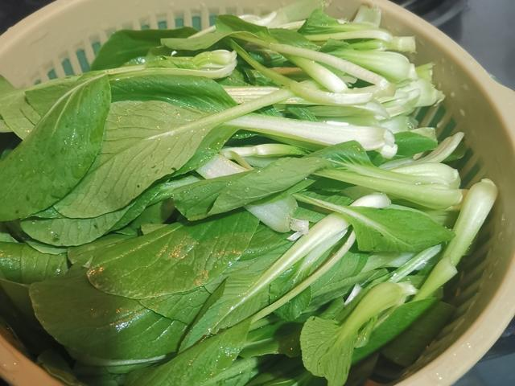
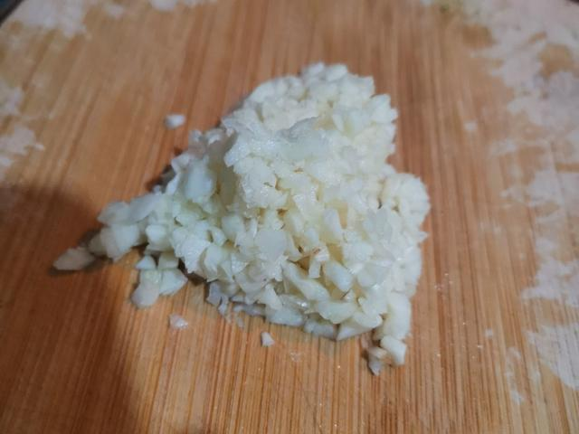
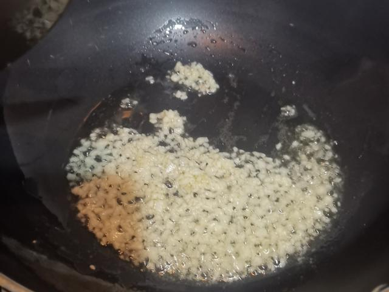
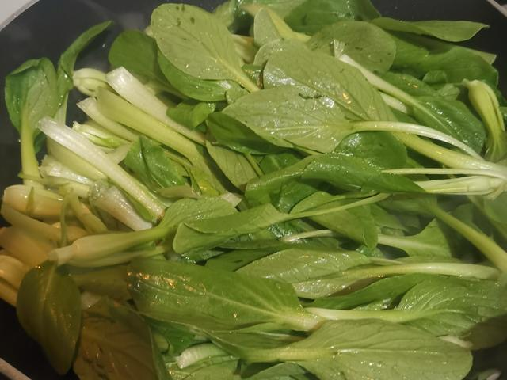
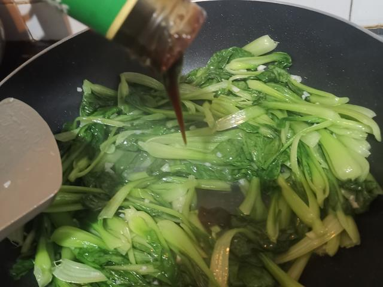
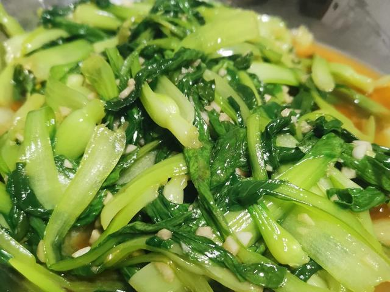

蒜蓉炒青菜
学会“大火快炒”，青菜才能翠绿不出水。
这一课练的是火候和时间：锅要够热、动作要快、出锅要早。学会后，清炒油麦菜、生菜、菠菜都用同一个套路。

01 · 本课目标
为什么第二课是炒青菜？
番茄炒蛋练了“别让蛋在锅里等”，这一课练“让菜在锅里别停留”。两者合起来，你才真正开始会控制火候。
本课记住一句话：青菜下锅前，锅必须热到微微冒烟；下锅后动作快，看到叶子刚变软就调味出锅，绝不让它在锅里“等”。
02 · 用料
买这些就够了
上海青、小油菜、奶白菜都行。挑菜梗饱满、叶子挺立的，蔫了的菜炒出来口感差一半。
还需要：一口口径较大的锅（越小越难炒开）、锅铲、漏水的洗菜盆。新手建议先用水分少的上海青，比菠菜更容易成功。
03 · 跟着做
六步，从洗菜到出锅
青菜出水、发黄、发苦，问题几乎都出在“下锅前有水”和“出锅太晚”这两件事上。
第一段 · 开火前准备（约 4 分钟）
-
STEP 备菜 · 约 3 分钟
洗菜并沥干
把青菜掰成一片片，菜根朝上用水冲洗，重点冲叶缝和根部；然后用力甩几下，再用厨房纸吸掉大颗水珠。
看到这样算对：洗菜盆底没有明显积水，菜叶表面看不到大颗水珠。这是整道菜不出水最关键的一步。

-
STEP 备菜 · 约 1 分钟
蒜拍碎切末，菜梗菜叶分开
蒜用刀背拍一下去皮，切末。如果菜比较粗壮，把菜梗和菜叶大致分开：菜梗先下锅，菜叶后下，成熟度才一致。
看到这样算对：蒜末不是细到成泥，保留小颗粒；菜梗和菜叶分装两个盘。

第二段 · 下锅（约 3 分钟）
-
STEP 爆香 · 约 15 秒
锅烧到冒烟，再下油和蒜
空锅大火烧 20 秒左右，到锅底微微冒烟；倒油摇匀，转中火下蒜末，炒到蒜末边缘微黄、闻起来有蒜香。
看到这样算对：蒜末是淡黄色而不是深棕色；如果已经发焦，说明油温太高，先关火晾 10 秒再继续。

-
STEP 快炒 · 1–2 分钟
先下菜梗，再下菜叶，全程大火
转大火，把沥干的菜梗先倒进锅里，用锅铲从底部翻起，炒约 10 秒后再下菜叶，继续保持大火快速翻动。
看到这样算对：菜入锅时有明显的“刺啦”声；菜叶在 30 秒内开始塌陷、颜色变深绿，锅底没有积水。

-
STEP 调味 · 约 15 秒
关小火撒盐，翻匀就出锅
看到大部分菜叶变软、菜梗还带一点脆时，立刻转小火或关火，把盐均匀撒在菜上，快速翻 15 秒以内。
看到这样算对：盐撒开而不是堆在一处；叶子全软、梗还能咬出脆声，锅底几乎无汤。

-
STEP 装盘 · 10 秒
先夹菜装盘，汤汁留在锅里
用锅铲把菜铲进盘子，锅底那点汁水不要一起倒进去；装完立刻上桌，别让菜在盘里继续捂。
看到这样算对：盘底基本干净，菜色翠绿油亮；吃一口，蒜香足、不苦、菜本身还是甜的。

04 · 翻车急救站
青菜翻车，几乎都在这四类
炒青菜的失败来得快去得也快，多数不用倒掉，按下面处理就行。
炒出一锅水，像煮青菜
为什么：菜没沥干、锅不够热，或者炒的时间太久。
现在怎么办：开大火不盖盖子快速收汁 20–30 秒，马上出锅，别等它“煮干”。
下次避免：洗后用力甩干或用厨房纸吸；下锅前确认锅已微微冒烟；看到叶子刚软就出锅。
蒜末糊了，整道菜发苦
为什么：油太热或蒜末在锅里停留太久。
现在怎么办：趁苦味还没渗进菜里，把发焦的蒜末尽量挑出去；如果整锅都是焦苦味，就洗锅重炒一次——青菜只要几分钟，浪费很小。
下次避免：先空锅烧热、倒油后转中火再下蒜；蒜末边缘刚微黄就立刻下菜。
叶子软烂了，菜梗还是硬的
为什么：整棵菜一起下锅，梗和叶的成熟时间不一样。
现在怎么办：把熟透的菜叶先盛出，菜梗切小段回锅大火补炒 30 秒，再拌回去。
下次避免：备菜时就把菜梗和菜叶分开，梗先下锅 10 秒再下叶。
咸淡不均或太咸
为什么：盐堆在一处没翻开，或者下盐太早。
现在怎么办：快速多翻几下让盐分散；真太咸就再加一点点糖平衡，或搭配白饭一起吃。
下次避免：盐最后撒，撒得均匀些，翻匀后先尝一片再装盘。
05 · 学会标准
怎么算“学会了”？
能做到下面四条，说明你已经掌握了家常炒青菜的火候逻辑。
-
1
从下锅到装盘不超过 3 分钟 全程动作连贯，没有中途停下来翻手机。
-
2
颜色翠绿不发黄 像刚出锅的餐馆青菜，而不是蔫黄的剩菜。
-
3
叶软梗脆，不汪水 盘底基本干净，夹起来不会带出一泡水。
-
4
蒜香明显但不苦 能闻出蒜味，吃完嘴里没有焦苦的后味。